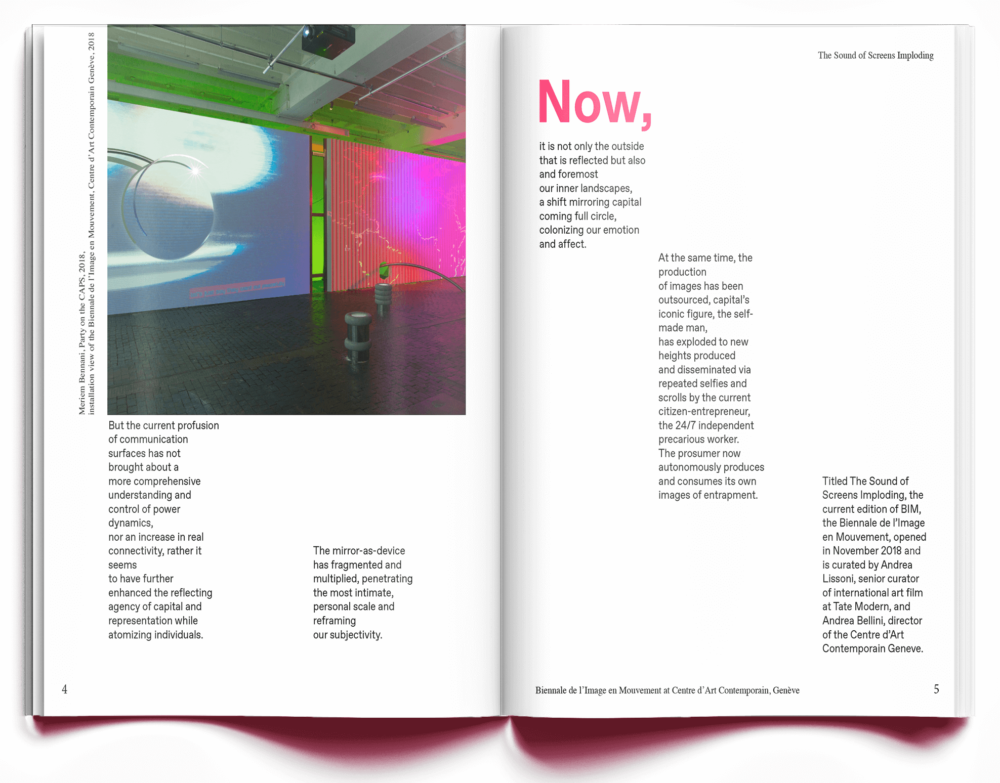
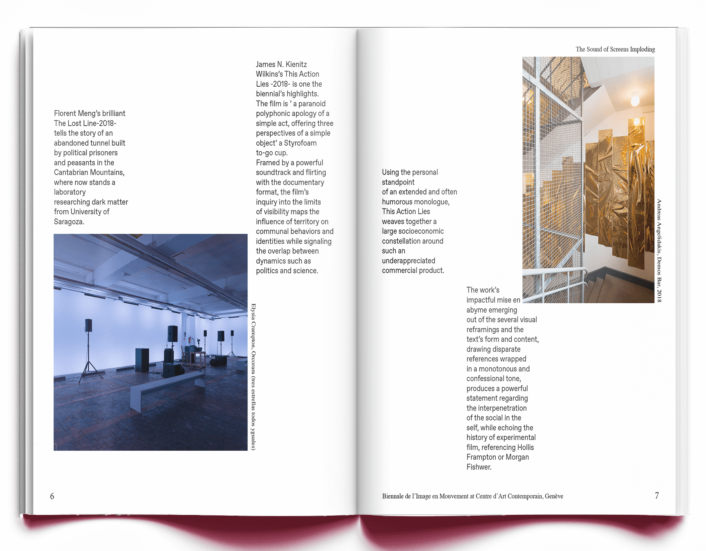
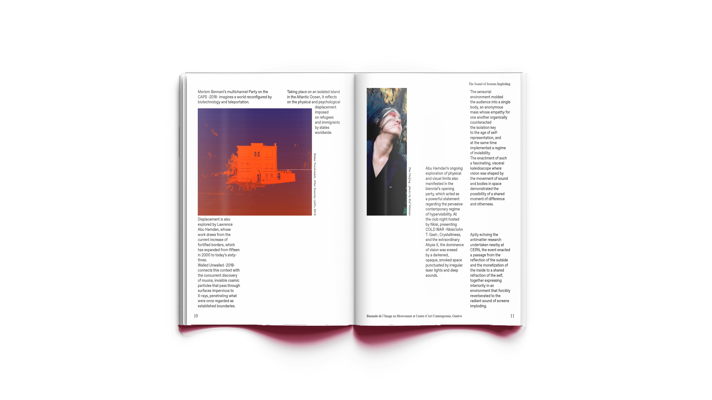

The brief
This project was part of a class in digital typography at Scuola Politecnica di Design (Milan). The brief:
Create a grid and use it to layout a cover and an article for a fictional art magazine.



On
Adobe Indesign